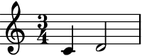
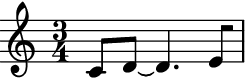
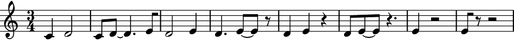
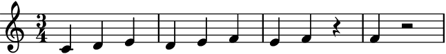
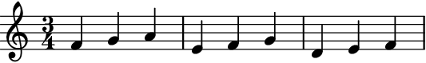
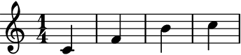
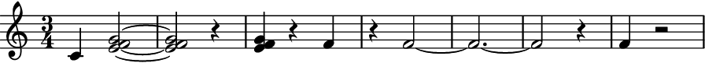
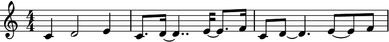

auxjad.LoopByWindow¶
-
class
auxjad.LoopByWindow(contents: abjad.core.Container.Container, *, window_size: (<class 'tuple'>, <class 'abjad.meter.Meter'>) = (4, 4), step_size: (<class 'int'>, <class 'float'>, <class 'tuple'>, <class 'str'>, <class 'abjad.utilities.Duration.Duration'>) = (1, 16), max_steps: int = 1, repetition_chance: float = 0.0, forward_bias: float = 1.0, head_position: (<class 'int'>, <class 'float'>, <class 'tuple'>, <class 'str'>, <class 'abjad.utilities.Duration.Duration'>) = 0, omit_time_signature: bool = False, move_window_on_first_call: bool = False)¶ This class can be used to output slices of an
abjad.Containerusing the metaphor of a looping window of a constant size given by anabjad.Duration.Usage is similar to other factory classes. It takes a container (or child class equivalent) as argument. Each call of the object, in this case
looper(), will move the window forwards and output the sliced window. If no window_size nor step_size are entered as arguments, they are set to the following default values, respectively: (4, 4), i.e. a window of the size of a 4/4 bar, and (1, 16), i.e. a step of the length of a sixteenth-note.>>> input_music = abjad.Container(r"c'4 d'2 e'4 f'2 ~ f'8 g'1") >>> looper = auxjad.LoopByWindow(input_music) >>> notes = looper() >>> staff = abjad.Staff(notes) >>> abjad.f(staff) \new Staff { \time 4/4 c'4 d'2 e'4 }

>>> notes = looper() >>> staff = abjad.Staff(notes) >>> abjad.f(staff) \new Staff { c'8. d'16 ~ d'4.. e'16 ~ e'8. f'16 }

The property
current_windowcan be used to access the current window without moving the head forwards.>>> notes = looper.current_window() >>> staff = abjad.Staff(notes) >>> abjad.f(staff) \new Staff { c'8. d'16 ~ d'4.. e'16 ~ e'8. f'16 }

The very first call will output the input container without processing it. To disable this behaviour and have the looping window move on the very first call, initialise the class with the keyword argument
move_window_on_first_callset toTrue.>>> input_music = abjad.Container(r"c'4 d'2 e'4 f'2 ~ f'8 g'1") >>> looper = auxjad.LoopByWindow(input_music, ... move_window_on_first_call=True, ... ) >>> notes = looper() >>> staff = abjad.Staff(notes) >>> abjad.f(staff) \new Staff { \time 4/4 c'8. d'16 ~ d'4.. e'16 ~ e'8. f'16 }
The optional arguments
window_sizeandstep_sizecan be used to set different window and step sizes.window_sizecan take a tuple or anabjad.Meteras input, whilestep_sizetakes a tuple or anabjad.Duration.>>> input_music = abjad.Container(r"c'4 d'2 e'4 f'2 ~ f'8 g'1") >>> looper = auxjad.LoopByWindow(input_music, ... window_size=(3, 4), ... step_size=(1, 4), ... ) >>> notes = looper() >>> staff = abjad.Staff(notes) >>> abjad.f(staff) \new Staff { \time 3/4 c'4 d'2 }
>>> notes = looper() >>> staff = abjad.Staff(notes) >>> abjad.f(staff) \new Staff { d'2 e'4 }
The instances of
LoopByWindowcan also be used as an iterator, which can then be used in a for loop to exhaust all windows. Notice how it appends rests at the end of the container, until it is totally exhausted.>>> input_music = abjad.Container(r"c'4 d'2 e'4") >>> looper = auxjad.LoopByWindow(input_music, ... window_size=(3, 4), ... step_size=(1, 8), ... ) >>> staff = abjad.Staff() >>> for window in looper: ... staff.append(window) >>> abjad.f(staff) \new Staff { \time 3/4 c'4 d'2 c'8 d'8 ~ d'4. e'8 d'2 e'4 d'4. e'8 ~ e'8 r8 d'4 e'4 r4 d'8 e'8 ~ e'8 r4. e'4 r2 e'8 r8 r2 }
This class can take many optional keyword arguments during its creation, besides
window_sizeandstep_size.max_stepssets the maximum number of steps that the window can advance when the object is called, ranging between 1 and the input value (default is also 1).repetition_chancesets the chance of a window result repeating itself (that is, the window not moving forwards when called). It should range from 0.0 to 1.0 (default 0.0, i.e. no repetition).forward_biassets the chance of the window moving forward instead of backwards. It should range from 0.0 to 1.0 (default 1.0, which means the window can only move forwards. A value of 0.5 gives 50% chance of moving forwards while a value of 0.0 will move the window only backwards). Finally,head_positioncan be used to offset the starting position of the looping window. It must be a tuple or anabjad.Duration, and its default value is 0.>>> input_music = abjad.Container(r"c'4 d'2 e'4 f'2 ~ f'8 g'1") >>> looper = auxjad.LoopByWindow(input_music, ... window_size=(3, 4), ... step_size=(5, 8), ... max_steps=2, ... repetition_chance=0.25, ... forward_bias=0.2, ... head_position=(2, 8), ... omit_time_signature=False, ... ) >>> looper.window_size 3/4 >>> looper.step_size 5/8 >>> looper.repetition_chance 0.25 >>> looper.forward_bias 0.2 >>> looper.max_steps 2 >>> looper.head_position 1/4 >>> looper.omit_time_signature False
Use the properties below to change these values after initialisation.
>>> looper.window_size = (5, 4) >>> looper.step_size = (1, 4) >>> looper.max_steps = 3 >>> looper.repetition_chance = 0.1 >>> looper.forward_bias = 0.8 >>> looper.head_position = 0 >>> looper.omit_time_signature = True >>> looper.window_size 5/4 >>> looper.step_size 1/4 >>> looper.max_steps 3 >>> looper.repetition_chance 0.1 >>> looper.forward_bias 0.8 >>> looper.head_position 0 >>> looper.omit_time_signature True
The function
len()can be used to get the total number of steps in the contents (always rounded up).>>> input_music = abjad.Container(r"c'1") >>> looper = auxjad.LoopByWindow(input_music) >>> len(looper) 16 >>> input_music = abjad.Container(r"c'1") >>> looper = auxjad.LoopByWindow(input_music, ... step_size=(1, 4), ... ) >>> len(looper) 4 >>> input_music = abjad.Container(r"c'2..") >>> looper = auxjad.LoopByWindow(input_music, ... step_size=(1, 4), ... window_size=(2, 4), ... ) >>> len(looper) 4
To run through the whole process and output it as a single container, from the initial head position until the process outputs the single last element, use the method
output_all().>>> input_music = abjad.Container(r"c'4 d'4 e'4 f'4") >>> looper = auxjad.LoopByWindow(input_music, ... window_size=(3, 4), ... step_size=(1, 4), ... ) >>> music = looper.output_all() >>> staff = abjad.Staff(music) >>> abjad.f(staff) \new Staff { \time 3/4 c'4 d'4 e'4 d'4 e'4 f'4 e'4 f'4 r4 f'4 r2 }
When using
output_all(), set the keyword argumenttie_identical_pitchestoTruein order to tie identical notes or chords at the end and beginning of consecutive windows.>>> input_music = abjad.Container(r"c'4 <e' f' g'>2 r4 f'2.") >>> looper = auxjad.LoopByWindow(input_music, ... window_size=(3, 4), ... step_size=(1, 4), ... ) >>> music = looper.output_all(tie_identical_pitches=True) >>> staff = abjad.Staff(music) >>> abjad.f(staff) \new Staff { \time 3/4 c'4 <e' f' g'>2 ~ <e' f' g'>2 r4 <e' f' g'>4 r4 f'4 r4 f'2 ~ f'2. ~ f'2 r4 f'4 r2 }

To run through just part of the process and output it as a single container, starting from the initial head position, use the method
output_n()and pass the number of iterations as argument. Similarly tooutput_all(), the keyword argumenttie_identical_pitchesis available for tying pitches.>>> input_music = abjad.Container(r"c'4 d'4 e'4 f'4") >>> looper = auxjad.LoopByWindow(input_music, ... window_size=(3, 4), ... step_size=(1, 4), ... ) >>> music = looper.output_n(2) >>> staff = abjad.Staff(music) >>> abjad.f(staff) \new Staff { \time 3/4 c'4 d'4 e'4 d'4 e'4 f'4 }
To change the size of the looping window after instantiation, use the property
window_size. In the example below, the initial window is of size (4, 4), but changes to (3, 8) after three calls. Notice how the very first call attaches a time signature equivalent to the window size to the output window; subsequent calls will not have time signatures unless the size of the looping window changes.>>> input_music = abjad.Container(r"c'4 d'2 e'4 f'2 ~ f'8 g'1") >>> looper = auxjad.LoopByWindow(input_music) >>> staff = abjad.Staff() >>> for _ in range(3): ... notes = looper() ... staff.append(notes) >>> abjad.f(staff) \new Staff { \time 4/4 c'4 d'2 e'4 c'8. d'16 ~ d'4.. e'16 ~ e'8. f'16 c'8 d'8 ~ d'4. e'8 ~ e'8 f'8 }
>>> looper.window_size = (3, 8) >>> staff = abjad.Staff() >>> for _ in range(3): ... notes = looper() ... staff.append(notes) >>> abjad.f(staff) \new Staff { \time 3/8 c'16 d'16 ~ d'4 d'4. d'4. }
To disable time signatures altogether, initialise
LoopByWindowwith the keyword argumentomit_time_signatureset toTrue(default isFalse), or use theomit_time_signatureproperty after initialisation.>>> input_music = abjad.Container(r"c'4 d'2 e'4 f'2 ~ f'8 g'1") >>> looper = auxjad.LoopByWindow(input_music, omit_time_signature=True) >>> notes = looper() >>> staff = abjad.Staff(notes) >>> abjad.f(staff) \new Staff { c'4 d'2 e'4 }

This class can handle dynamics and articulations too. When a leaf is shortened by the looping window’s movement, the dynamics and articulations are still applied to it.
>>> input_music = abjad.Container( ... r"c'4-.\p\< d'2--\f e'4->\ppp f'2 ~ f'8") >>> looper = auxjad.LoopByWindow(input_music) >>> staff = abjad.Staff() >>> for _ in range(2): ... music = looper() ... staff.append(music) >>> abjad.f(staff) \new Staff { \time 4/4 c'4 \p - \staccato \< d'2 \f - \tenuto e'4 \ppp - \accent c'8. \p - \staccato \< d'16 \f - \tenuto ~ d'4.. e'16 \ppp - \accent ~ e'8. f'16 }
Use the
contentsproperty to read as well as overwrite the contents of the looper. Notice that thehead_positionwill remain on its previous value and must be reset to0if that’s required.>>> input_music = abjad.Container(r"c'4 d'2 e'4 f'2 ~ f'8 g'1") >>> looper = auxjad.LoopByWindow(input_music) >>> notes = looper() >>> staff = abjad.Staff(notes) >>> abjad.f(staff) \new Staff { \time 4/4 c'4 d'2 e'4 }

>>> notes = looper() >>> staff = abjad.Staff(notes) >>> abjad.f(staff) \new Staff { c'8. d'16 ~ d'4.. e'16 ~ e'8. f'16 }
>>> looper.contents = abjad.Container(r"c'16 d'16 e'16 f'16 g'2. a'1") >>> notes = looper() >>> staff = abjad.Staff(notes) >>> abjad.f(staff) \new Staff { e'16 f'16 g'8 ~ g'2 ~ g'8 a'8 }
>>> looper.head_position = 0 >>> notes = looper() >>> staff = abjad.Staff(notes) >>> abjad.f(staff) \new Staff { c'16 d'16 e'16 f'16 g'2. }

This class can handle tuplets, but this functionality should be considered experimental.
>>> input_music = abjad.Container(r"\times 2/3 {c'8 d'8 e'} d'2.") >>> looper = auxjad.LoopByWindow(input_music, ... window_size=(3, 4), ... step_size=(1, 16)) >>> staff = abjad.Staff() >>> for _ in range(3): ... window = looper() ... staff.append(window) >>> abjad.f(staff) \new Staff { \times 2/3 { \time 3/4 c'8 d'8 e'8 } d'2 \times 2/3 { c'32 d'16 ~ d'16 e'8 } d'16 ~ d'2 \times 2/3 { d'16 e'8 } d'8 ~ d'2 }
-
__init__(contents: abjad.core.Container.Container, *, window_size: (<class 'tuple'>, <class 'abjad.meter.Meter'>) = (4, 4), step_size: (<class 'int'>, <class 'float'>, <class 'tuple'>, <class 'str'>, <class 'abjad.utilities.Duration.Duration'>) = (1, 16), max_steps: int = 1, repetition_chance: float = 0.0, forward_bias: float = 1.0, head_position: (<class 'int'>, <class 'float'>, <class 'tuple'>, <class 'str'>, <class 'abjad.utilities.Duration.Duration'>) = 0, omit_time_signature: bool = False, move_window_on_first_call: bool = False)¶ Initialize self. See help(type(self)) for accurate signature.
Methods
__init__(contents, *, window_size, …)Initialize self. output_all(*, tie_identical_pitches)Goes through the whole looping process and outputs a single abjad.Selection.output_n(n, *, tie_identical_pitches)Goes through niterations of the looping process and outputs a singleabjad.Selection.Attributes
contentsThe listwhich serves as the basis for the slices of the looper.current_windowRead-only property, returns the window at the current head position. forward_biasThe chance of the window moving forward instead of backwards. head_positionThe position of the head at the start of a looping window. max_stepsThe maximum number of steps per operation. omit_time_signatureWhen True, the output will contain no time signatures.repetition_chanceThe chance of the head not moving, thus repeating the output. step_sizeThe size of each step when moving the head. window_sizeThe length of the looping window. -